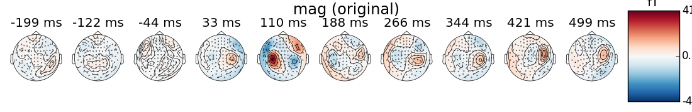
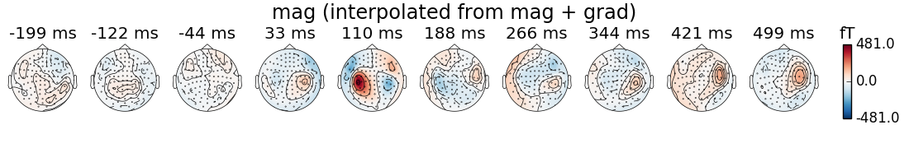
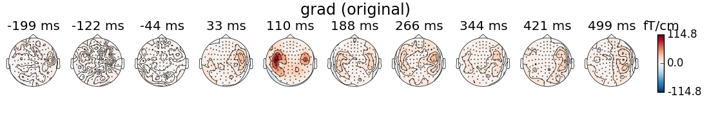
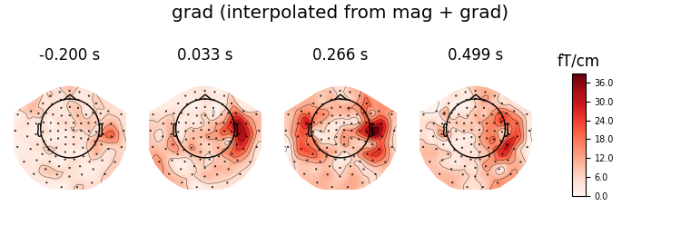

Note
Click here to download the full example code
Remap MEG channel types¶
In this example, MEG data are remapped from one channel type to another. This is useful to:
visualize combined magnetometers and gradiometers as magnetometers or gradiometers.
run statistics from both magnetometers and gradiometers while working with a single type of channels.
- 
- 
- 
- 
Out:
Reading /home/circleci/mne_data/MNE-sample-data/MEG/sample/sample_audvis-ave.fif ...
Read a total of 4 projection items:
PCA-v1 (1 x 102) active
PCA-v2 (1 x 102) active
PCA-v3 (1 x 102) active
Average EEG reference (1 x 60) active
Found the data of interest:
t = -199.80 ... 499.49 ms (Left Auditory)
0 CTF compensation matrices available
nave = 55 - aspect type = 100
Projections have already been applied. Setting proj attribute to True.
Applying baseline correction (mode: mean)
Computing dot products for 305 coils...
Computing cross products for coils 305 x 102 coils...
Preparing the mapping matrix...
Truncating at 210/305 components to omit less than 0.0001 (9.9e-05)
Computing dot products for 305 coils...
Computing cross products for coils 305 x 203 coils...
Preparing the mapping matrix...
Truncating at 210/305 components to omit less than 0.0001 (9.9e-05)
# Author: Mainak Jas <mainak.jas@telecom-paristech.fr>
# License: BSD (3-clause)
import mne
from mne.datasets import sample
print(__doc__)
# read the evoked
data_path = sample.data_path()
fname = data_path + '/MEG/sample/sample_audvis-ave.fif'
evoked = mne.read_evokeds(fname, condition='Left Auditory', baseline=(None, 0))
# go from grad + mag to mag
virt_evoked = evoked.as_type('mag')
evoked.plot_topomap(ch_type='mag', title='mag (original)', time_unit='s')
virt_evoked.plot_topomap(ch_type='mag', time_unit='s',
title='mag (interpolated from mag + grad)')
# go from grad + mag to grad
virt_evoked = evoked.as_type('grad')
evoked.plot_topomap(ch_type='grad', title='grad (original)', time_unit='s')
virt_evoked.plot_topomap(ch_type='grad', time_unit='s',
title='grad (interpolated from mag + grad)')
Total running time of the script: ( 0 minutes 7.473 seconds)
Estimated memory usage: 8 MB